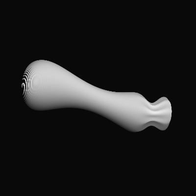
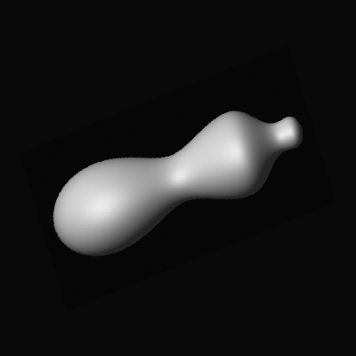

Swept surface2 / 2 candidatesProvisional B, lower confidence. More expressive local material response; rim sampling detracts from finish. Both compact attempts fail: 336 and 323 weighted characters.Run selected study ↗Initial candidateReadable source
Implicit field2 / 2 candidatesGrade C. Lighting improves volume, but it remains a demonstration with a darker background patch. No compact attempt: technical shortening would not repair that judgment.Run selected study ↗Initial candidateReadable source